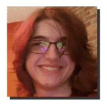
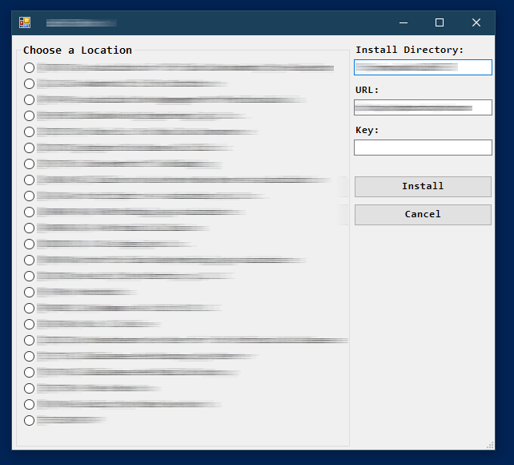
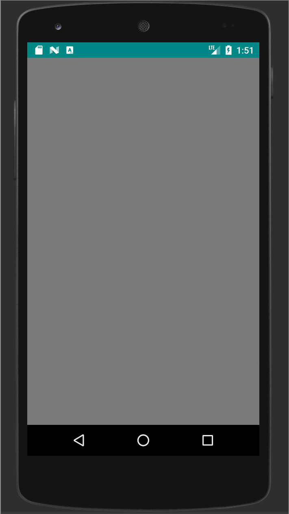
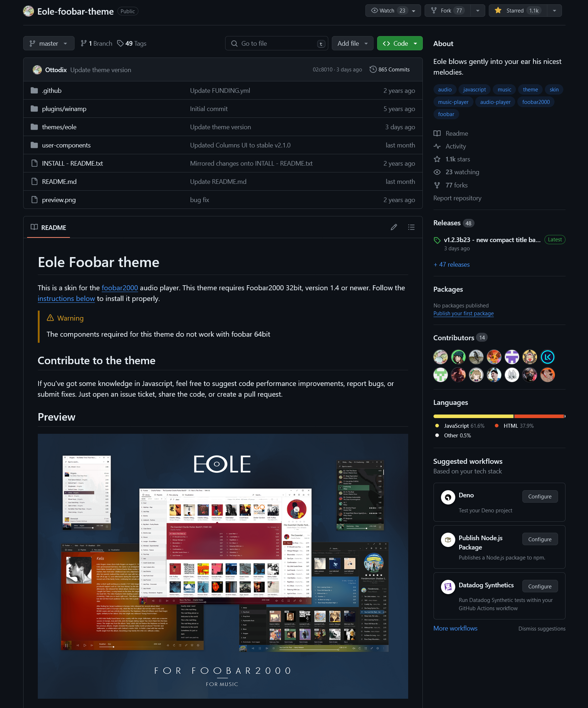
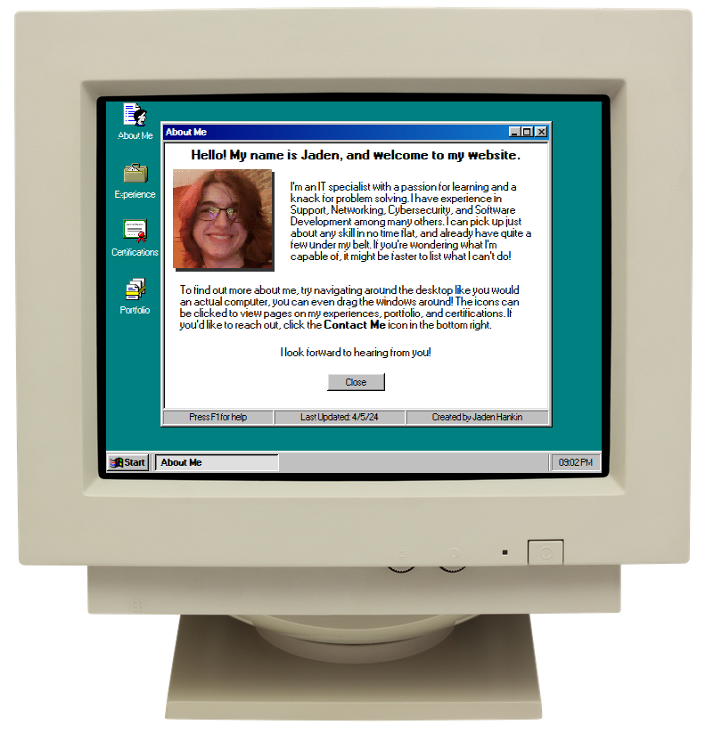

This window doesn't do anything yet, but it will soon!
Hello! My name is Jaden, and welcome to my website.
I’m an IT specialist with a passion for learning and a knack for problem solving. I have experience in Support, Networking, Cybersecurity, and Software Development among many others. I can pick up just about any skill in no time flat, and already have quite a few under my belt. If you’re wondering what I’m capable of, it might be faster to list what I can’t do!
To find out more about me, try navigating around the desktop like you would an actual computer, you can even drag the windows around! The icons can be clicked to view pages on my experiences, portfolio, and certifications. If you’d like to reach out, click the Contact Me icon in the bottom right.
I look forward to hearing from you!
My Experiences
TECH CORP - Tallahassee, FL
November 2023 - Present
At TECH CORP, I work as a TECH Engineer Apprentice. The position involves providing technical support to a variety of clients, each with different and unique challenges to overcome. Dealing with these can include replacing or repairing hardware, troubleshooting commercial and in-house software, and managing networks among many others. Additionally, I work to create varied and advanced scripts used to automate and significantly improve productivity. Some examples include those that have been used to streamline software installs, diagnose networking issues, backup servers, and deploy virtual machines.
The job can be challenging at times, needing to work with a large array of systems and clients, and requires in-depth knowledge of networking, hardware, and software. It forces me to think on my feet, quickly learning and adapting to new systems and challenges every day. In addition to the technical skills I have picked up and further refined, the position has helped me develop greater communication, time management, and organizational skills in order to excel in the workplace.
"Quote" -Supervisor
FLHSMV - Tallahassee, FL
May 2023 - September 2023
At the Florida Department of Highway Safety and Motor Vehicles, I worked as a CVE IT Technician on an internship. The position involved working in a high security environment and assisting with general IT tasks, such as imaging computers, replacing hard drives, providing general technical support to workers, and recording information into databases. It wasn’t always the most complex, but it was an excellent first step into the professional environment and helped me refine the skills needed to work in one. Additionally, I worked to provide remote technical support to Law Enforcement agents calling from across the state of Florida. Having to take calls from a wide variety of people, each in different positions and with different reasons for calling could be difficult, but only helped to further hone my communication, support, and technical skills.
My most prominent contribution was my work with existing automation systems, both creating new scripts from scratch and improving upon existing scripts to improve speed, reliability, and flexibility. These were both command line and GUI based and used for managing and deploying an ecosystem of programs, drivers, networking setups, and operating system settings. Working on these taught me a great deal, and gave me an in-depth understanding of Windows software and the Registry specifically, in addition to a better understanding of how a large scale IT ecosystem works to assist users.
"Quote" -Supervisor
Powershell Program Installation GUI - TECH CORP
Created by me for internal usage at TECH CORP, the script automates the normally manual installation of a security program for different organizations, though the exact specifics cannot be given for security reasons.
Rather than needing to find and locate several pieces of information before running several commands, one just has to select a location from the list and press “Install”. The script helps to simplify an important setup process for less technically knowledgeable users through a simple GUI interface and streamlines the installation as a whole.
The script was created in a day, and helped further refine my Powershell skills. It was also a more user-facing script than most I had worked on previously, and taught me about the important considerations needed in such cases.
'My Users' App - FSU
Created for FSU class LIS4331 (Advanced Mobile Applications Development), the app was developed for Android using Android Studio. The app stores a number of users in a created and persistent SQLite Database, and allows for users to be added, updated, and removed.
The most challenging aspect of the development was the managing of the database after its creation, but it didn’t take long to get everything working as it should. Working on the app helped me learn more about app creation, working with databases, and improved my general development abilities.
Eole Foobar Theme - Github
Foobar2000 is a modular freeware audio player originally released in 2002. It is actively developed and widely popular for its flexibility in user configuration and customization.
One such customization is a skin called “Eole”, created by github user Ottodix. The skin does not frequently receive updates anymore, as the creator has largely stopped maintaining it. I began using the skin myself several years ago, and have recently been working to try and maintain it.
This work includes updating required components, improving existing features, adding new features, fixing bugs, and solving related issues that users report. The skin is written primarily using Javascript and HTML, and working on it requires skills in both.
Working on an project such as this with a large existing codebase has been challenging at times, but has been extremely insightful in teaching me about working with others through open-source code, using github, and working with end-users to resolve problems.
Interactive Resume - FSU
This project is what you are looking at right now! Created for FSU class LIS 4708 (IT Professions), this is a website that serves as an Interactive Resume for prospective employers to view in addition to a more standard resume.
Designed to mimic the interface of a Windows 98 Computer, the site was made from scratch by me using HTML, Javascript, and CSS in addition to a handful of open-source libraries.
Working on the site has been my first large foray into Web Development outside of the basics. Some parts of the development have been challenging, but these difficulties only help me further learn. It has been a highly rewarding and informative experience that has significantly improved my development and design skills while also helping to better market myself for the professional world.
Certifications
CompTIA A+
07/25/2022
The Computing Technology Industry Association
CompTIA Network+
03/13/2021
The Computing Technology Industry Association
CompTIA Security+
06/28/2021
The Computing Technology Industry Association